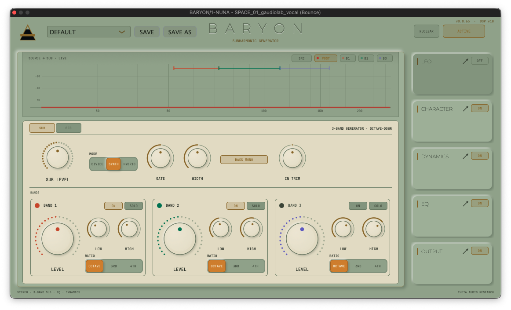
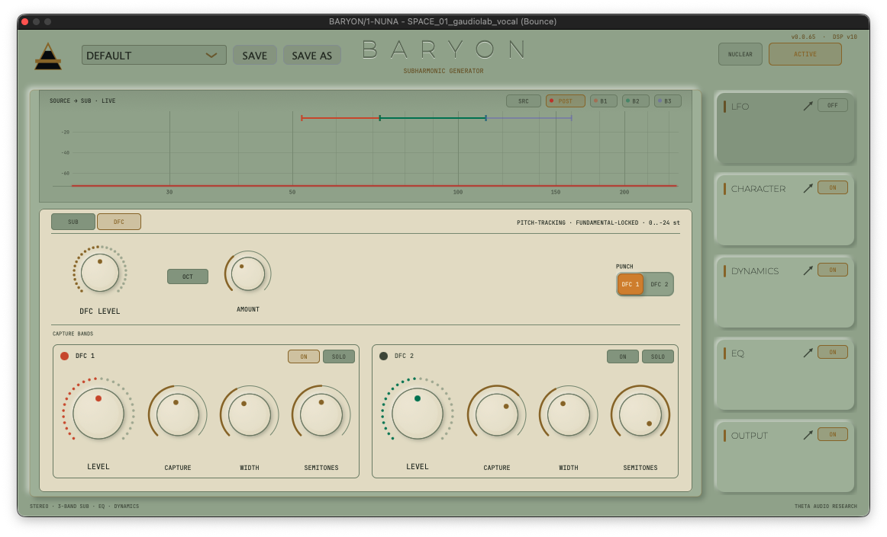
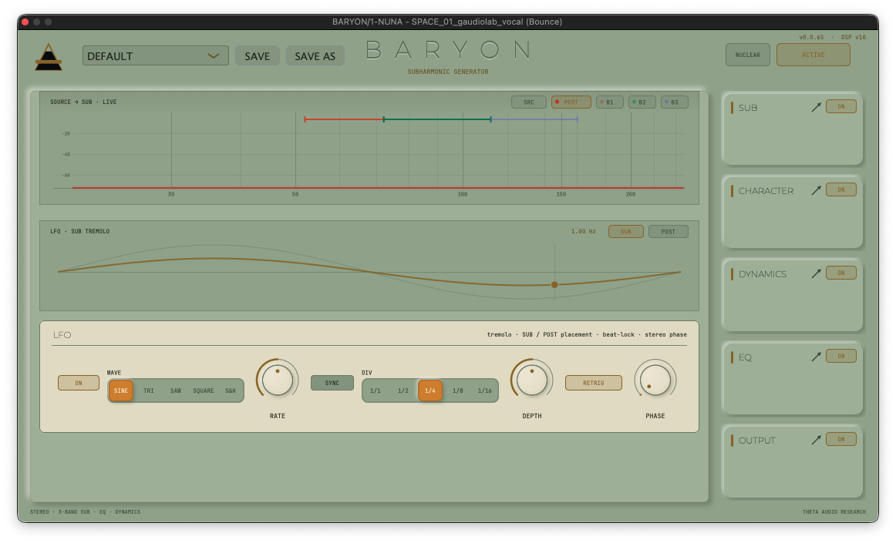
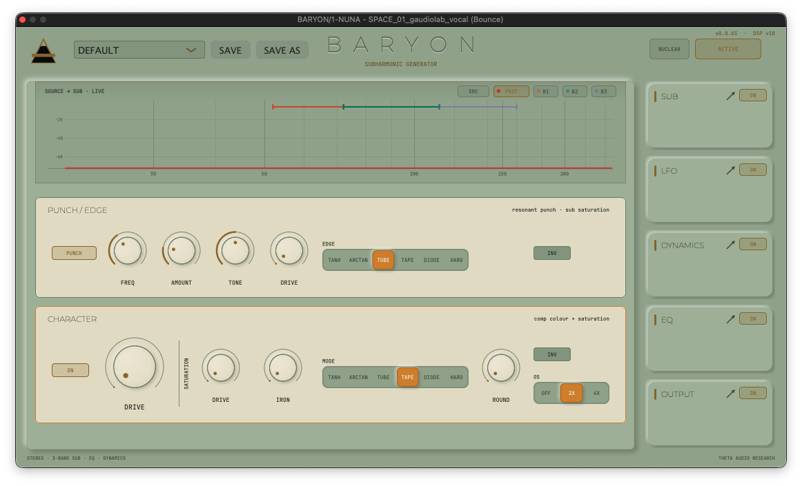
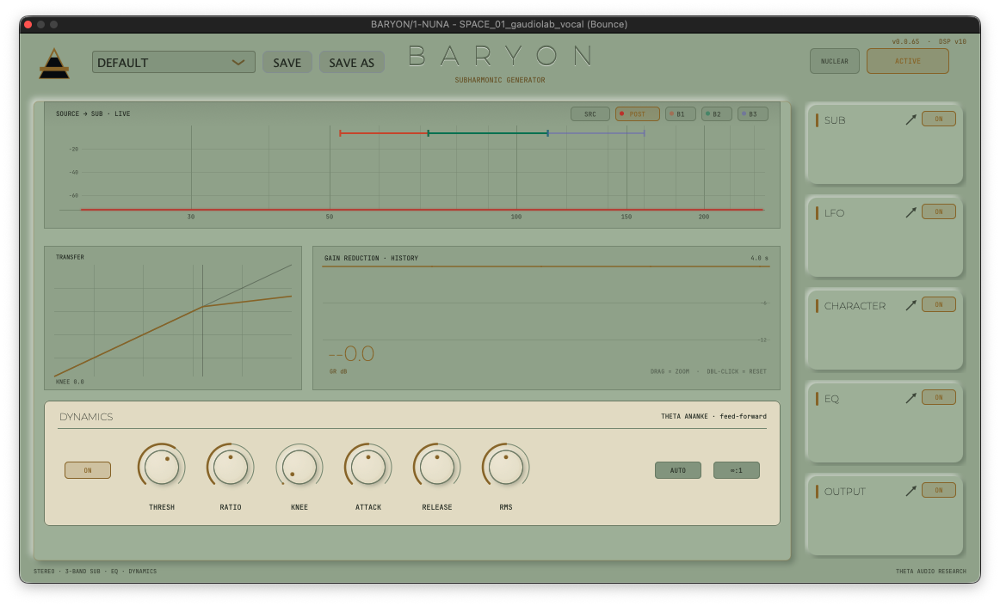
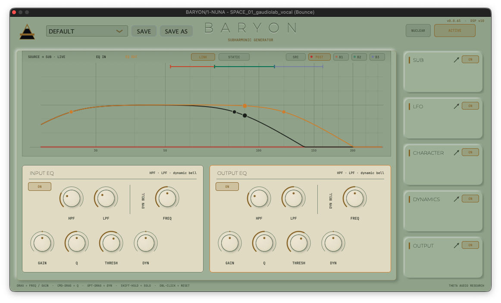
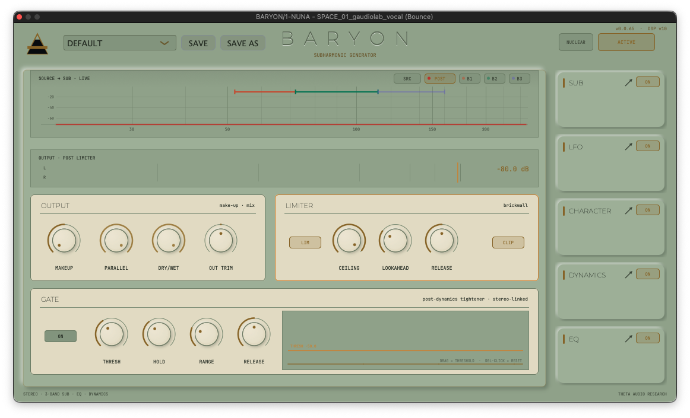

Add mass. Baryon generates, shapes, and animates the sub-bass your source only hints at. BARYON listens to the bass you have and generates the octave you can feel — three independent bands of pitch-tracked subharmonics, shaped by an analog-modeled saturation stage, a dbx-style compressor, a dual dynamic EQ, a beat-locked LFO, and a gated, limited output section. It is a complete low-end instrument in one window, built on DSP that is measured, unit-tested, and torture-certified.
Chassis is undergoing low-frequency calibration. Operational parameters include zero-dive architecture featuring portable user library files (.baryon).
NOTIFY_ME_AT_LAUNCHFOCUS_RACK_MODULES

The heart of the plugin: a three-band subharmonic generator with three generation philosophies, selectable per instance.
- · DIVIDE — The classic dbx approach. The source band is squared and fed to a flip-flop that toggles on every rising zero crossing.
- · SYNTH — Waveform modeling. BARYON estimates the dominant pitch of each band from its zero-crossing period and runs a clean, continuous-phase sine.
- · HYBRID — The grit of the divider blended with the body of the sine.
- · Chassis Architecture — Each band gets its own color-coded cell: a hero LEVEL knob, ON and SOLO pills, LOW/HIGH crossover controls, and a per-band RATIO selector.

A dedicated modulator that breathes life into the generated sub — tremolo applied to the sub only, never your dry signal.
- · Waveform Array — Five waveforms: SINE, TRI, SAW, SQUARE, and S&H. Rate runs free or SYNC to host tempo.
- · Position RETRIG — In sync mode the LFO's phase is derived from the host's song position every block, staying beat-locked through loops and relocates.
- · PHASE Orbit (0–180°) — Offsets the right channel's LFO for widening motion no static tool can produce.
- · Display Mapping — Shows the selected shape over a full-scale ghost, with a gold cursor riding the curve at the engine's published phase.


Two stages of harmonic identity, laid out on shared columns so the eye never hunts.
- · PUNCH / EDGE Engine — Shapes the generated sub itself: PUNCH carves a tight, kick-friendly knee; TONE rolls the top; DRIVE feeds a six-mode EDGE saturator.
- · Global Color Stage — A hero DRIVE pushes the compressor's colour stage, with switchable oversampling (OFF / 2X / 4X) to keep aggressive settings alias-free.
- · Headroom Preservation — Dedicated DC blockers sit at the end of the nonlinear chain, draining offset in under a second while leaving 20 Hz programme within 0.095 dB.
ANANKE is the uncompromised compression engine extracted from the ROGERIAN Suite and configured as a focused, single-purpose processor.
- · TRANSFER Display — Draws the actual gain law on a 10 dB grid: threshold marker, the OverEasy soft-knee region, and the ∞:1 hard-limit curve.
- · GAIN REDUCTION History — Hangs from the ceiling: the shaded area is the gain removed, sampled from the audio thread every 2.5 ms.
- · Parameter Suite — THRESH, RATIO, KNEE, ATTACK, RELEASE, and RMS — the detector's averaging window from 1 to 50 ms.


Two independent processors — EQ IN (before the generator) and EQ OUT (after) — each with a 24 dB/oct high-pass and low-pass plus a dynamic bell with FREQ, GAIN, Q, THRESH, and DYN range.
- · Direct Manipulation Node Grammar — Drag a node for frequency and gain, Cmd-drag for Q, Opt-drag to set the dynamic range.
- · Dynamic Animation — The dynamic bells animate with the music: a faint REACH line marks full configured travel and a haloed LIVE line rides the current position.
- · Global Architecture — LINK mode runs one detection path on the mono sum so both channels' bells always move identically.
The final say. A post-limiter L/R output meter spans the top — gold bars that turn amber past the limiter ceiling, and a peak readout in dB.
- · Gain Staging Zone — Handles compressor MAKEUP, PARALLEL, master DRY/WET, and OUT TRIM.
- · Limiter Rail — A stereo-linked, look-ahead brickwall — CEILING, LOOKAHEAD, RELEASE, and a CLIP mode.
- · Dual-Gate — A fast fixed 0.3 ms attack preserves transients; HOLD stops chatter on decaying hits; RANGE sets how far closed it goes.
- · Draggable Gate Display — The THRESH knob wears the incoming level as a live ring, and the gate view beside it scrolls three seconds of history.

LAB_NOTE // UI_FRAMEWORK
HANDOFF — Port the DARK + NUCLEAR UI themes to a ROGERIAN-family plugin
From: BARYON (where both themes are shipped and approved)
To: any THETA plugin on the ROGERIAN visual language (ROGERIAN, ANANKE, PNEUMA, ATRIA, …)
Reference implementation: /Users/steveneal/Documents/_PLUGINS/zJUCE_SOURCES/BARYON/baryon_src_v0.0.64/Source/Common/Theme/Theme.h and Source/Plugin/PluginEditor.cpp.
Status of the source material: NUCLEAR shipped in BARYON v0.0.63; DARK is the canonical THETA "Void" palette. This document is self-contained — you do not need the BARYON session that produced it.
0. Scope rule (read first)
Work only in the target plugin's own source tree, launched from that plugin's own Claude Code home folder. Never edit BARYON or any other sibling from your session. BARYON is the reference, not a dependency — port by copying values and patterns, not files with BARYON-specific content.
1. What you are building
Three sanctioned skins on one token set, switched at runtime by a state-named pill in the header, persisted per-user (not per-preset — a theme is a preference, not a sound):
- LIGHT — the ANANKE/PNEUMA "White & Gold" neumorphic surface (the existing default).
- DARK — the THETA "Void": near-black surfaces, silver text, bronze-lifted gold. Border tokens are not gold.
- NUCLEAR — the Kelvin-era power-station control room: institutional sage-green panels, ivory knob caps/plates that read as instrument dial faces, stencil green-black ink, aged-brass accent, pilot-lamp amber/red. A light-family skin.
2. Architecture (the whole trick)
1. Mutable palette tokens. Every colour the plugin paints must route through one namespace of C++17 inline variables (BARYON: sa::col). The declared initializers ARE the light theme, so a build that never calls the theme code is bit-identical to the pre-theming UI.
Precondition check: if the target plugin has any hardcoded juce::Colour(0xff…) in paint code, tokenize those first — the theme swap only reaches what routes through tokens.
2. Theme namespace with a Skin enum, one apply<Name>() per skin that re-values every token, an apply(Skin) dispatcher, and file persistence:
Use the target plugin's own name in the settings path. Note the macOS gotcha: JUCE's userApplicationDataDirectory resolves to ~/Library/, not ~/Library/Application Support/….
3. Header pill, state-named like a bypass chip, cycling LIGHT → DARK → NUCLEAR → LIGHT on click. "NUCLEAR" (7 chars) fits a 58 px pill in the mono face at 10 px. Draw the current skin's name, not an icon.
4. The swap itself (BARYON toggleTheme() — copy this shape):
If the target plugin keeps any components constructed-but-unparented (module stages, cached pages), they will miss the broadcast — walk them explicitly, or they come back stale when re-shown.
5. Load before construct. Call theme::loadSaved() in the editor constructor before creating the LookAndFeel and content — their constructors cache ColourIds from the token values at construction time.
3. The palettes (verbatim from BARYON, ARGB hex)
Token semantics use ROGERIAN names; if the target's tokens differ, map by role, not name. Depth law all skins obey: body < card < plate/cap in surface lightness.
| Token (role) | LIGHT | DARK ("Void") | NUCLEAR (Kelvin) |
|---|---|---|---|
win — window/body/field | ffc6cbd0 | ff06080c | ff9aab93 sage panel |
modOn — raised card (lit) | ffd0d5da | ff0c0c10 | ffa7b8a0 |
modOff — recessed/off pills | ffbdc2c7 | ff080808 | ff8e9f87 |
bdrOn / bdr — card/plate border | ffa9afb6 | ff242230 (NOT gold) | ff75866d |
cream — text on lit accent fills | fff3ead6 | fff3ead6 | fff3ead6 |
sunken — recessed wells | ffc6cbd0 | ff06080c | ff9aab93 |
divider — wells/grid/frames | ffaeb4ba | ff111420 | ff81927a |
gold — primary accent | ffa37c2c | ffc8a86b | ff8f6f26 aged brass |
goldDim — arcs, version string | ffba9a59 | ff7a6840 | ffa68b48 |
goldMut — readable accent sub-text | ff8c7036 | ff9e8b65 | ff6f5c28 |
ink — title/brand | ff1a1e24 | ffffffff | ff1c231a stencil |
label — knob/module names | ff262b31 | ffb0b0b0 | ff272f24 |
labelDim — secondary text | ff4a4f57 | ff707070 | ff444e3e |
arcTrack — empty knob arc | ffafb5bc | ff1a1c20 | ff7f9078 |
cap — knob body / raised plate | ffd6dbe0 | ff0a0c10 | ffe4dfc8 ivory dial |
capHi — dome sheen stop | ffdee3e8 | ff1a1c20 | ffeee9d7 |
capBdr — cap/plate hairline rim | ffaab1b8 | ff1e2028 | ff6f7d65 dark bezel |
amber — GR / dynamic / SOLO | ffdb8f2a | ffe09a34 | ffd18a26 pilot lamp |
band1/2/3 — per-band accent trio | ffd85a30/ff1d9e75/ff7f77dd | same as light | ffc9502c/ff0e7d58/ff6a61cc |
shadowD — down-right cast shadow | 450d2750 | 99000000 | 451d2a1a green-black |
shadowL — up-left sheen | 8cffffff | 0affffff whisper | 8cffffff |
engraveLit — wordmark lit wall | 9effffff | 17ffffff | 9effffff |
engraveShad — wordmark shadow wall | 5c0d2750 | 99000000 | 5c1d2a1a |
engraveFace — wordmark recessed face | ff868c95 | ff4b515c | ff64735c |
Plugin-specific axis tokens: BARYON adds sigAdd (the colour of generated signal: gold on LIGHT, red ffe03c46 on DARK, pilot-lamp red ffbf3a2c on NUCLEAR — "injected energy reads as heat"). Do not copy sigAdd blindly: identify the target plugin's own semantic axis (e.g. a reverb's wet-energy colour, a compressor's GR colour) and give it the same treatment — brand accent in LIGHT, heat-red in DARK, pilot-lamp red in NUCLEAR — or omit if the plugin has no such axis.
4. Gotchas that cost time in BARYON (don't re-earn these)
- Engraved wordmark must re-light per theme. An incised masthead drawn with fixed light/shadow walls looks embossed (or vanishes) on dark surfaces — hence the
engrave*trio being tokens at all. - NUCLEAR is a light-family skin:
theme::darkstaysfalse. Paint sites usetheme::darkfor dark-only effects (glow strengths, deeper gradients, heavier shadows). Keeping the bool alongside the enum means every existingdark ?branch does the right thing for NUCLEAR with zero edits. Check the target for such branches before assuming. - Persistence parse order: check
contains("theme=nuclear")beforecontains("theme=dark")— and old single-word settings files still parse. - The pill is UI state, not a parameter. Don't put the skin in APVTS; it must not save into presets or session state.
- Ivory caps are the NUCLEAR signature. The palette's lightest tone goes to
cap/capHiso plates and knob bodies read as cream instrument dials in black-ish bezels (capBdrdark green-grey) on the sage panel. If you "fix" cap back toward the panel colour, the whole theme collapses into porridge. - Band/accent trio on green: mid-saturation accents vanish on sage. BARYON deepened all three (values above). If the target has its own categorical accents, deepen them similarly and check against
ff9aab93. - Alpha discipline (house rule): text solid, alpha only for vector art/shadows.
- Verify all three transitions live (L→D, D→N, N→L) — a token missed in one
apply*()shows up as a stale colour only on some cycle orders.
5. Implementation checklist
- [ ] Confirm every paint call routes through the token namespace; tokenize stragglers first.
- [ ] Tokens →
inlinemutable; declared defaults = current light look (bit-identical when untouched). - [ ] Add
Skinenum +applyDark()+applyNuclear()(values from §3) +apply(Skin). - [ ] Persistence with the target plugin's
THETA/<PLUGIN>/ui.settings; load in editor ctor before LNF/content construction. - [ ] Header pill: state-named, cycles three skins, drawn from
modOff/bdrOn/labelDimtokens. - [ ]
toggleTheme(): apply → save → LNF refresh → broadcast → walk off-hierarchy components → repaint. - [ ] Re-seed any widget ColourIds set imperatively (combo boxes, buttons) in a
lookAndFeelChanged()/applyWidgetTheme()hook. - [ ] Map the plugin's semantic axis token (§3 note) for all three skins.
- [ ] Eyeball every module/view in all three skins; screenshot for the changelog.
- [ ] Follow the target's own house rules for version bump + changelog (this is a UI-only change).
- [ ] Honest status in the changelog: colours chosen ≠ colours seen — list what hasn't had human eyes on it.
6. Acceptance
Done when: the pill cycles LIGHT/DARK/NUCLEAR live with no stale widgets (including views not currently on screen), the choice survives editor close/reopen and DAW restart, presets neither store nor disturb it, and a build with the feature merely present (never toggled) renders pixel-identical to the pre-port plugin in LIGHT.
MEASURED_NOT_MARKETED
- Build Verification Suite 77 assertions run automatically on every single build, including the eleven-test generator torture suite.
- Generator Attack Onset from silence locks in 13.6 ms to half level; silence in results in literal zero output.
- Octave Stability Wrong-octave content on a pure tone measures > 200 dB down; no octave flip on harmonic-rich basses.
- Gate Ballistics Opens in 1.2 ms, RANGE floor accurate to 0.05 dB, absolute zero threshold flutter.
- Modulation Smoothness LFO square chops parameter maps maintain a maximum per-sample gain step of 0.007 — mathematically click-free.
- Anti-Phase Parameter 180° stereo phase calculation features channel gains anti-phase with gL + gR pinned at 1.000.
TECHNICAL_SPECIFICATIONS
- Type Matrix 3-band subharmonic generator with dynamic EQ, compressor, saturation, LFO, gate, and look-ahead limiter
- Signal Flow IN TRIM → Input Dynamic EQ → 3-Band Generator (+LFO) → Mix → Output Dynamic EQ → Compressor → Saturation (up to 4× oversampled) → DC Block → Gate → Look-ahead Limiter → OUT TRIM
- Latency Engine Fully reported to the host (limiter look-ahead + oversampling), automatically compensated.
- Formats VST3 · AU · Standalone [macOS Apple Silicon native compilation]
- Build Version v0.0.65 / THEME_FRAMEWORK_VERIFIED